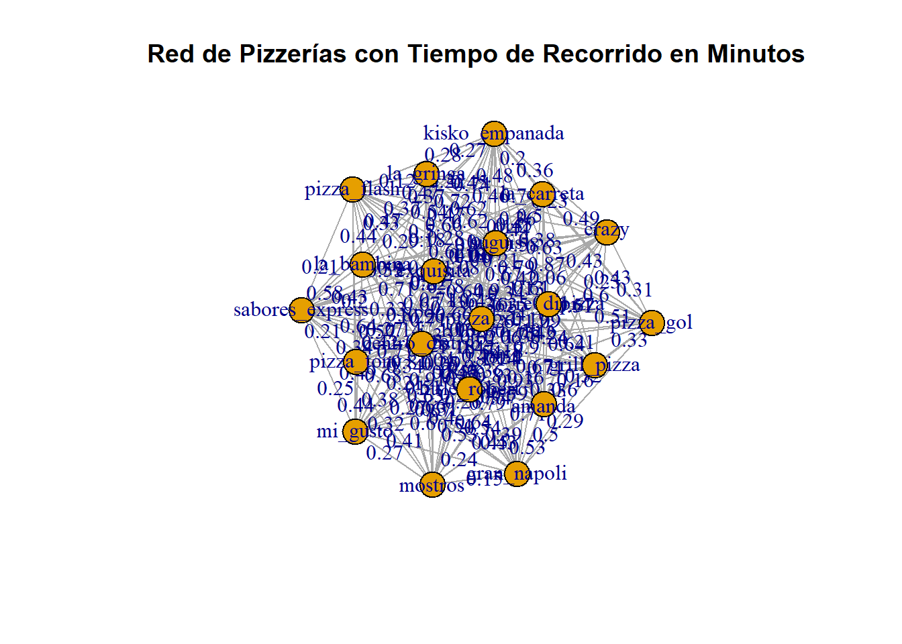
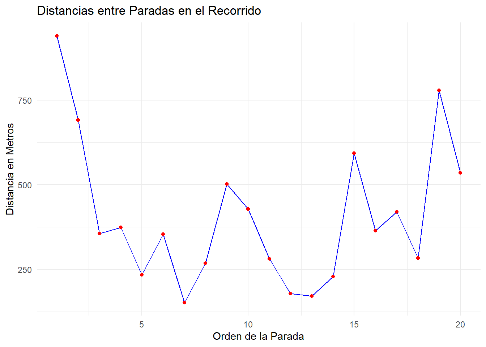

Warning: package 'visNetwork' was built under R version 4.4.2trabajo_mat
Trabajo de minizacion
# Ejemplo de tus datos
# Crear un data frame con todas las pizzerías y sus coordenadas
pizzerias <- data.frame(
nombre = c("pizza_xl", "gran_napoli", "little_robert", "kisko_empanada", "mi_gusto",
"centro_distrib", "la_gringa", "amanda", "pizza_gol", "huguis",
"mostros", "crazy", "sabores_express", "pizza_tony", "grill_pizza",
"la_bambina", "pizza_flash", "torre_dipizza", "exquisita", "la_carreta"),
lat = c(-34.466611, -34.460504, -34.463451, -34.460149, -34.459216,
-34.459855, -34.458556, -34.458024, -34.458438, -34.461167,
-34.459670, -34.458620, -34.457569, -34.456634, -34.456919,
-34.461331, -34.458137, -34.455389, -34.454649, -34.461630),
lon = c(-58.915051, -58.913723, -58.915227, -58.914507, -58.912229,
-58.908905, -58.916000, -58.917526, -58.914647, -58.910290,
-58.914585, -58.911803, -58.913275, -58.914755, -58.912286,
-58.915901, -58.915050, -58.911926, -58.914877, -58.914324)
)
# Verificar el data frame
print(pizzerias) nombre lat lon
1 pizza_xl -34.46661 -58.91505
2 gran_napoli -34.46050 -58.91372
3 little_robert -34.46345 -58.91523
4 kisko_empanada -34.46015 -58.91451
5 mi_gusto -34.45922 -58.91223
6 centro_distrib -34.45985 -58.90890
7 la_gringa -34.45856 -58.91600
8 amanda -34.45802 -58.91753
9 pizza_gol -34.45844 -58.91465
10 huguis -34.46117 -58.91029
11 mostros -34.45967 -58.91459
12 crazy -34.45862 -58.91180
13 sabores_express -34.45757 -58.91327
14 pizza_tony -34.45663 -58.91475
15 grill_pizza -34.45692 -58.91229
16 la_bambina -34.46133 -58.91590
17 pizza_flash -34.45814 -58.91505
18 torre_dipizza -34.45539 -58.91193
19 exquisita -34.45465 -58.91488
20 la_carreta -34.46163 -58.91432pizza_xl<- c(-34.466611, -58.915051)
little_robert <- c(-34.463451, -58.915227)
gran_napoli <- c(-34.460504, -58.913723)
kisko_empanada <- c(-34.460149, -58.914507)
mi_gusto <- c(-34.459216, -58.912229)
la_gringa <- c(-34.458556, -58.916000)
amanda <- c(-34.458024, -58.917526)
centro_distrib <- c(-34.459855, -58.908905)
pizza_gol <-c(-34.458438, -58.914647)
huguis <- c(-34.461167, -58.910290)
mostros <- c(-34.459670, -58.914585)
crazy <- c(-34.458620, -58.911803)
sabores_express <- c(-34.457569, -58.913275)
pizza_tony <- c(-34.456634, -58.914755)
grill_pizza <- c(-34.456919, -58.912286)
la_bambina <- c(-34.461331, -58.915901)
pizza_flash <- c(-34.458137, -58.915050)
torre_dipizza <- c(-34.455389, -58.911926)
exquisita <- c(-34.454649, -58.914877)
la_carreta <- c(-34.461630, -58.914324)
# Convertir el data frame en un objeto sf para que sea compatible con los mapas de OpenStreetMap
pizzerias_sf <- st_as_sf(pizzerias, coords = c("lon", "lat"), crs = 4326)#Crear el mapa con plotly
library(leaflet)
mapa_pizzerias <- leaflet(pizzerias) %>%
addTiles() %>% # Añade el mapa base de OpenStreetMap
setView(lng = -58.9146, lat = -34.4585, zoom = 14) %>% # Centrar el mapa en Pilar, Buenos Aires
addMarkers(
lng = ~lon,
lat = ~lat,
popup = ~nombre,
label = ~nombre,
labelOptions = labelOptions(
noHide = FALSE, # Muestra el label solo al pasar el cursor
textsize = "12px",
direction = "auto"
)
)
# Mostrar el mapa
mapa_pizzeriasvelocidad_kmh <- 50 # Suponiendo 50 km/h en vehículo
velocidad_ms <- velocidad_kmh * 1000 / 3600 # Convertir a m/s
# Crear una lista para almacenar los tiempos
tiempos <- matrix(NA, nrow = nrow(pizzerias), ncol = nrow(pizzerias))
# Calcular distancias y convertirlas a tiempo
for (i in 1:nrow(pizzerias)) {
for (j in 1:nrow(pizzerias)) {
if (i != j) {
# Obtener las coordenadas de las pizzerías
coord1 <- c(pizzerias$lon[i], pizzerias$lat[i])
coord2 <- c(pizzerias$lon[j], pizzerias$lat[j])
# Calcular distancia en metros usando la fórmula de Haversine
distancia_m <- distHaversine(coord1, coord2)
# Convertir la distancia en tiempo (en minutos)
tiempo_min <- (distancia_m / velocidad_ms) / 60
tiempos[i, j] <- tiempo_min
} else {
tiempos[i, j] <- 0 # Distancia a sí mismo es 0
}
}
}
# Crear el grafo con igraph
g <- graph.adjacency(tiempos, mode = "undirected", weighted = TRUE)Warning: `graph.adjacency()` was deprecated in igraph 2.0.0.
ℹ Please use `graph_from_adjacency_matrix()` instead.V(g)$name <- pizzerias$nombre
# Graficar el grafo
plot(g, edge.label = round(E(g)$weight, 2), vertex.label = V(g)$name,
main = "Red de Pizzerías con Tiempo de Recorrido en Minutos")
# Función para calcular la distancia entre dos puntos
calcular_distancia <- function(lat1, lon1, lat2, lon2) {
distVincentySphere(c(lon1, lat1), c(lon2, lat2))
}
# Crear la matriz de distancias
distancias <- matrix(0, nrow = nrow(pizzerias), ncol = nrow(pizzerias))
rownames(distancias) <- pizzerias$nombre
colnames(distancias) <- pizzerias$nombre
# Calcular las distancias entre todas las pizzerías
for(i in 1:nrow(pizzerias)) {
for(j in 1:nrow(pizzerias)) {
distancias[i, j] <- calcular_distancia(pizzerias$lat[i], pizzerias$lon[i], pizzerias$lat[j], pizzerias$lon[j])
}
}
# Forzar que la matriz sea simétrica
distancias <- (distancias + t(distancias)) / 2
# Convertir la matriz de distancias en un objeto TSP
tsp_obj <- TSP(distancias)
# Definir el centro de distribución como el punto inicial y final del recorrido
tour <- solve_TSP(tsp_obj, method = "nearest_insertion", start = which(rownames(distancias) == "centro_distrib"))
# Obtener el orden de visita a las pizzerías
orden_visita <- labels(tour)
# Mostrar la matriz de distancias y el orden de visita
print("Matriz de Distancias:")[1] "Matriz de Distancias:"print(distancias) pizza_xl gran_napoli little_robert kisko_empanada mi_gusto
pizza_xl 0.0000 690.66809 352.1403 721.07724 862.99277
gran_napoli 690.6681 0.00000 355.9185 82.09665 198.39765
little_robert 352.1403 355.91846 0.0000 373.47010 545.86741
kisko_empanada 721.0772 82.09665 373.4701 0.00000 233.46263
mi_gusto 862.9928 198.39765 545.8674 233.46263 0.00000
centro_distrib 940.1140 448.08329 704.9398 515.22178 313.27867
la_gringa 900.8990 301.17029 549.5084 224.11075 353.83876
amanda 982.5215 445.04003 639.9222 364.34016 503.97695
pizza_gol 910.5695 245.12518 560.5780 190.90063 238.23949
huguis 747.1322 323.62403 519.5894 403.30407 280.78963
mostros 773.8514 121.98009 425.0037 53.80051 222.07483
crazy 938.1767 273.93707 622.8781 300.94604 77.01129
sabores_express 1019.6645 329.30017 678.8506 308.66426 206.96017
pizza_tony 1110.9668 441.09730 760.1006 391.94958 369.28469
grill_pizza 1108.3539 420.31191 775.6279 413.33181 255.75439
la_bambina 592.9217 220.08579 243.9705 183.53143 411.12603
pizza_flash 943.3214 290.28253 591.7748 229.45313 285.43350
torre_dipizza 1281.7324 592.80805 947.2225 580.42849 426.92655
exquisita 1331.6995 660.32659 980.3607 613.19839 563.50956
la_carreta 558.4827 136.94682 219.0012 165.71758 330.43670
centro_distrib la_gringa amanda pizza_gol huguis mostros
pizza_xl 940.1140 900.89900 982.5215 910.5695 747.1322 773.85144
gran_napoli 448.0833 301.17029 445.0400 245.1252 323.6240 121.98009
little_robert 704.9398 549.50842 639.9222 560.5780 519.5894 425.00368
kisko_empanada 515.2218 224.11075 364.3402 190.9006 403.3041 53.80051
mi_gusto 313.2787 353.83876 503.9769 238.2395 280.7896 222.07483
centro_distrib 0.0000 667.08442 817.1210 550.1358 193.6257 521.74861
la_gringa 667.0844 0.00000 152.0726 124.8805 599.2962 179.57351
amanda 817.1210 152.07259 0.0000 268.2441 750.6829 326.25734
pizza_gol 550.1358 124.88052 268.2441 0.0000 502.2116 137.26363
huguis 193.6257 599.29622 750.6829 502.2116 0.0000 427.99162
mostros 521.7486 179.57351 326.2573 137.2636 427.9916 0.00000
crazy 299.4238 385.29531 529.4711 261.8270 315.7134 280.83001
sabores_express 475.0219 273.18917 393.4633 158.7985 485.2711 262.98050
pizza_tony 645.6674 242.56174 297.7148 201.0649 650.0696 338.32600
grill_pizza 450.6956 386.54946 496.4501 274.8756 507.1338 371.90293
la_bambina 662.8137 309.04520 397.2009 341.9974 515.3231 220.85866
pizza_flash 595.5689 98.88886 227.6135 49.9100 551.9524 175.90911
torre_dipizza 569.2551 513.93283 591.8236 421.4022 660.5003 535.42099
exquisita 797.7051 446.97346 447.5208 422.3176 838.8880 559.57741
la_carreta 535.1912 375.18324 497.5058 356.5664 373.8258 219.49738
crazy sabores_express pizza_tony grill_pizza la_bambina
pizza_xl 938.17673 1019.6645 1110.9668 1108.3539 592.9217
gran_napoli 273.93707 329.3002 441.0973 420.3119 220.0858
little_robert 622.87809 678.8506 760.1006 775.6279 243.9705
kisko_empanada 300.94604 308.6643 391.9496 413.3318 183.5314
mi_gusto 77.01129 206.9602 369.2847 255.7544 411.1260
centro_distrib 299.42383 475.0219 645.6674 450.6956 662.8137
la_gringa 385.29531 273.1892 242.5617 386.5495 309.0452
amanda 529.47113 393.4633 297.7148 496.4501 397.2009
pizza_gol 261.82704 158.7985 201.0649 274.8756 341.9974
huguis 315.71337 485.2711 650.0696 507.1338 515.3231
mostros 280.83001 262.9805 338.3260 371.9029 220.8587
crazy 0.00000 178.7267 349.7067 194.4751 482.2385
sabores_express 178.72673 0.0000 171.1368 116.0879 483.1929
pizza_tony 349.70671 171.1368 0.0000 228.8366 533.3432
grill_pizza 194.47511 116.0879 228.8366 0.0000 592.7193
la_bambina 482.23851 483.1929 533.3432 592.7193 0.0000
pizza_flash 302.84385 174.7624 169.4901 287.6606 364.0331
torre_dipizza 359.85043 272.4411 294.3434 173.4947 755.4126
exquisita 524.42527 356.7663 221.2528 347.0114 749.7516
la_carreta 407.20332 462.2081 557.5574 556.7892 148.5206
pizza_flash torre_dipizza exquisita la_carreta
pizza_xl 943.32137 1281.7324 1331.6995 558.4827
gran_napoli 290.28253 592.8081 660.3266 136.9468
little_robert 591.77481 947.2225 980.3607 219.0012
kisko_empanada 229.45313 580.4285 613.1984 165.7176
mi_gusto 285.43350 426.9265 563.5096 330.4367
centro_distrib 595.56894 569.2551 797.7051 535.1912
la_gringa 98.88886 513.9328 446.9735 375.1832
amanda 227.61350 591.8236 447.5208 497.5058
pizza_gol 49.91000 421.4022 422.3176 356.5664
huguis 551.95242 660.5003 838.8880 373.8258
mostros 175.90911 535.4210 559.5774 219.4974
crazy 302.84385 359.8504 524.4253 407.2033
sabores_express 174.76242 272.4411 356.7663 462.2081
pizza_tony 169.49011 294.3434 221.2528 557.5574
grill_pizza 287.66060 173.4947 347.0114 556.7892
la_bambina 364.03306 755.4126 749.7516 148.5206
pizza_flash 0.00000 419.2888 388.6070 394.5075
torre_dipizza 419.28881 0.0000 283.1235 728.7776
exquisita 388.60696 283.1235 0.0000 778.7773
la_carreta 394.50746 728.7776 778.7773 0.0000print("Orden de Visita:")[1] "Orden de Visita:"print(orden_visita) [1] "centro_distrib" "crazy" "grill_pizza" "torre_dipizza"
[5] "exquisita" "sabores_express" "pizza_tony" "pizza_flash"
[9] "amanda" "la_gringa" "pizza_gol" "mostros"
[13] "kisko_empanada" "la_bambina" "little_robert" "pizza_xl"
[17] "la_carreta" "gran_napoli" "mi_gusto" "huguis" orden_coords <- pizzerias[match(orden_visita, pizzerias$nombre), c("lon", "lat", "nombre")]
# Crear el mapa en Leaflet
mapa <- leaflet() %>%
addTiles()
# Añadir marcadores numerados en cada pizzería y líneas conectando las paradas
for (i in 1:(nrow(orden_coords) - 1)) {
# Calcular distancia entre dos pizzerías consecutivas
distancia <- distancias[orden_visita[i], orden_visita[i + 1]]
# Añadir líneas entre las paradas con la distancia
mapa <- mapa %>%
addPolylines(
lng = c(orden_coords$lon[i], orden_coords$lon[i + 1]),
lat = c(orden_coords$lat[i], orden_coords$lat[i + 1]),
color = "blue", weight = 2, opacity = 0.7,
label = paste("Distancia:", round(distancia, 2), "m")
) %>%
addMarkers(
lng = orden_coords$lon[i],
lat = orden_coords$lat[i],
popup = paste("Pizzería:", orden_coords$nombre[i]),
label = as.character(i), # Número de parada
labelOptions = labelOptions(noHide = TRUE, direction = "top", textOnly = TRUE,
style = list("color" = "red", "font-size" = "15px"))
)
}
# Añadir el último marcador con el nombre de la pizzería
mapa <- mapa %>%
addMarkers(
lng = orden_coords$lon[nrow(orden_coords)],
lat = orden_coords$lat[nrow(orden_coords)],
popup = paste("Pizzería:", orden_coords$nombre[nrow(orden_coords)]), # Mostrar el nombre de la última pizzería
label = as.character(nrow(orden_coords)), # Etiqueta con el número de parada
labelOptions = labelOptions(noHide = TRUE, direction = "top", textOnly = TRUE,
style = list("color" = "red", "font-size" = "15px"))
)
# Conectar el último marcador con el primero, como si fuera el Centro de Distribución
mapa <- mapa %>%
addPolylines(
lng = c(orden_coords$lon[nrow(orden_coords)], orden_coords$lon[1]),
lat = c(orden_coords$lat[nrow(orden_coords)], orden_coords$lat[1]),
color = "blue", weight = 2, opacity = 0.7,
label = "Distancia al Centro de Distribución" # Puedes modificar el texto aquí si es necesario
)
# Mostrar el mapa
mapa# Ordenar los puntos para que el recorrido empiece y termine en el centro de distribución
puntos <- rbind(
pizzerias[pizzerias$nombre == "centro_distrib", c("lon", "lat")],
pizzerias[pizzerias$nombre != "centro_distrib", c("lon", "lat")],
pizzerias[pizzerias$nombre == "centro_distrib", c("lon", "lat")]
)
# Calcular la ruta usando OSRM para obtener la ruta en calles
ruta <- osrmRoute(loc = puntos, returnclass = "sf")Warning: "returnclass" is deprecated.# Obtener y mostrar en consola la distancia total y el tiempo estimado
distancia_total <- ruta$distance # en metros
tiempo_estimado <- ruta$duration # en segundos
# Crear el mapa con leaflet y agregar la ruta
mapa <- leaflet() %>%
addTiles() %>%
addPolylines(data = ruta, color = "blue", weight = 2, opacity = 0.7) # Ruta
# Añadir marcadores con el nombre de cada pizzería
for (i in 1:nrow(pizzerias)) {
mapa <- mapa %>%
addMarkers(
lng = pizzerias$lon[i],
lat = pizzerias$lat[i],
popup = pizzerias$nombre[i]
)
}
# Añadir marcadores numerados para el orden de las paradas, omitiendo el último punto
for (i in 1:(nrow(puntos) - 1)) { # Excluir el último punto
mapa <- mapa %>%
addLabelOnlyMarkers(
lng = puntos$lon[i],
lat = puntos$lat[i],
label = as.character(i),
labelOptions = labelOptions(noHide = TRUE, direction = "top", textOnly = TRUE,
style = list("color" = "red", "font-size" = "15px"))
)
}
# Mostrar el mapa
mapa# Calcular la distancia geodésica entre cada parada
distancias <- c()
for (i in 1:(nrow(puntos) - 1)) {
# Calcula la distancia entre el punto i y el siguiente
dist <- distVincentySphere(
c(puntos$lon[i], puntos$lat[i]),
c(puntos$lon[i + 1], puntos$lat[i + 1])
)
distancias <- c(distancias, dist)
}
# Crear un data frame para el gráfico
df_distancias <- data.frame(
Parada = 1:(length(distancias)),
Distancia = distancias
)
# Generar el gráfico de líneas
ggplot(df_distancias, aes(x = Parada, y = Distancia)) +
geom_line(color = "blue") +
geom_point(color = "red") +
labs(title = "Distancias entre Paradas en el Recorrido",
x = "Orden de la Parada",
y = "Distancia en Metros") +
theme_minimal()